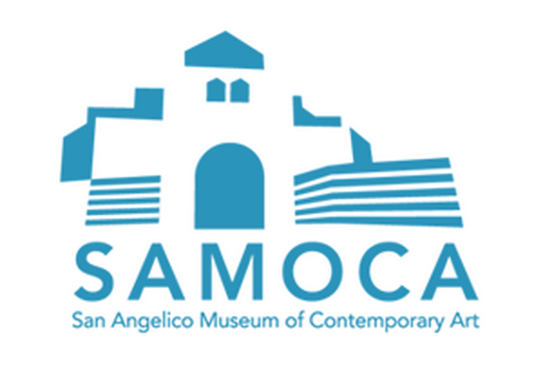
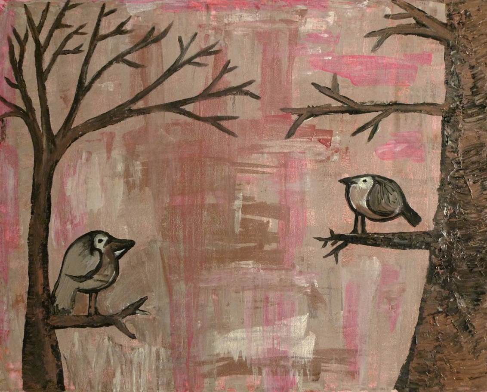

<!DOCTYPE html>
<html>
<head>
  <meta charset="utf-8">
  <title>Ember Starter Kit</title>
  <link rel="stylesheet" href="css/normalize.css">
  <link rel="stylesheet" href="css/style.css">
</head>
<body>
  <!-- application template. This is the main container of the SPA -->
  <script type="text/x-handlebars">
    {{#link-to 'index' class="headerDiv"}}
      
    {{/link-to}}
    <ul class="topNav">
      {{#link-to 'about' class="btn"}}About{{/link-to}}
      {{#link-to 'collections' class="btn"}}Collections{{/link-to}}
      {{#link-to 'exhibits' class="btn"}}Exhibits{{/link-to}}
      {{#link-to 'notes' class="btn"}}Visitor Notes{{/link-to}}
    </ul>
    {{outlet}}   
  </script>

  <!-- index.html is the landing page. It gets rendered into the application template -->
  <script type="text/x-handlebars" id="index">
    <section id="home" class="pageClass">
      <h2 class="homepageHeader">Welcome to Samoca</h2>
      <div class="homePageDiv">
        
        <div class="homePageDiv homePageCopy">
          SAMOCA (San Angelico Museum of Contemporary Art) is a museu with a focus on modern art from the last 75 years. Since its inception in 1973, the museum has been the leader in representing modern contemporary art and design. The museum is located in the heart of Ventura, California, ninety iles north of Los Angeles.
          <br><br>
          {{#link-to 'about'}}<strong>learn more &raquo;</strong>{{/link-to}}
        </div>
      </div>

    </section>
  </script>

  <!-- about template -->
  <script type="text/x-handlebars" id="about">
    <section>
      <h2>Celebrating the Best of Modern Art</h2>

      <p>Located in the heart of Ventura, ninety miles north of Los Angeles, SAMOCA (San Angelico Museum of Contemporary Art) focuses its efforts on art of the last 75 years. Since its inception in 1973, it has been in the front ranks of modern museums.</p>

      <h2>An Introduction</h2>

      <p>SAMOCA honors Saint Angelico by promoting and nourishing of the arts. It offers a creative mixture of visual and performing arts, alongside music and craft, and is suitable for the entire family. The museum searches out unique talents and accomplishments of up-and-coming artists found within the diverse and daring California community and beyond.</p>

      <p>Through our varied collections and staged events, and with the support of our patrons and volunteers, the museum helps to promote the importance of modern art in the modern world. Influences such as pop, cinema, and current events, permeate our halls.</p>
    </section>
  </script>

  <!-- collections template -->
  <script type="text/x-handlebars" id="components/single-collection">
    <strong>{{title}}</strong>
    <br>
    {{copy}}
    <br>
    
  </script>

  <script type="text/x-handlebars" id="collections">
    {{#each model as |col|}}
      {{single-collection title=col.title copy=col.copy image=col.image}}
    {{/each}}
  </script>

  <script type="text/x-handlebars" id="exhibits">
    <div class="pageClass">
      <seciton class="exhibitSection">
        <h2>Exhibits</h2>
        This is where ALL our exhibits will be listed
      </seciton>
    </div>
  </script> 

  <script type="text/x-handlebars" id="exhibit">
    <article class="singleExhibitContent">
    </article>
  </script>

  <script src="js/libs/jquery-1.10.2.js"></script>
  <script src="js/libs/ember-template-compiler-1.12.0.js"></script>
  <script src="js/libs/ember-1.12.0.debug.js"></script>
  <script src="js/app.js"></script>
  <!-- to activate the test runner, add the "?test" query string parameter -->
  <script src="tests/runner.js"></script>
</body>
</html>
